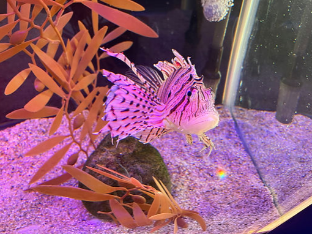
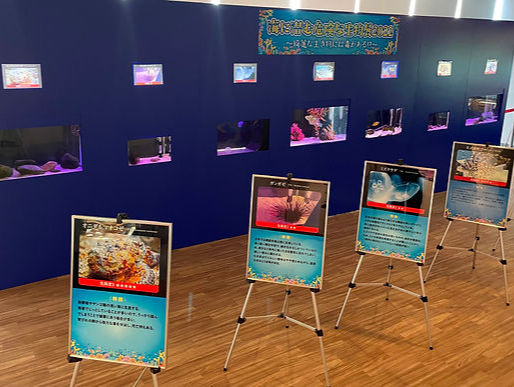
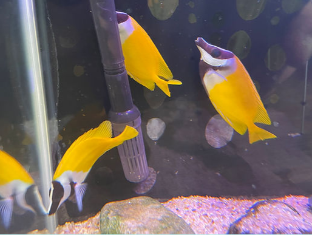
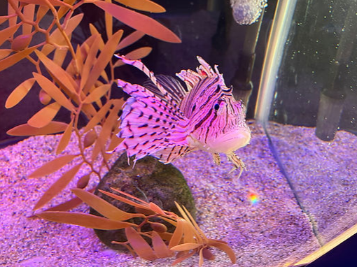
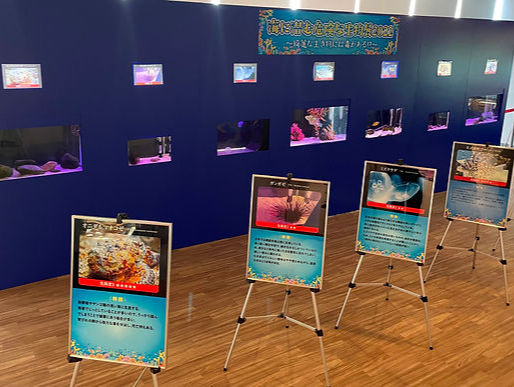
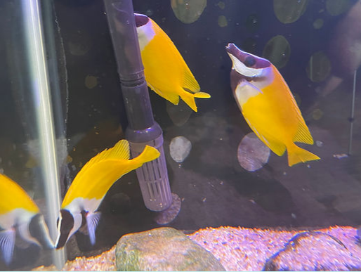
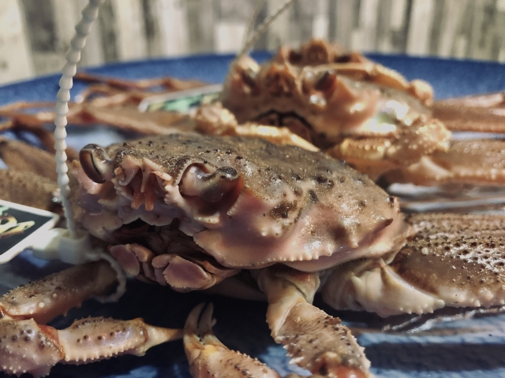
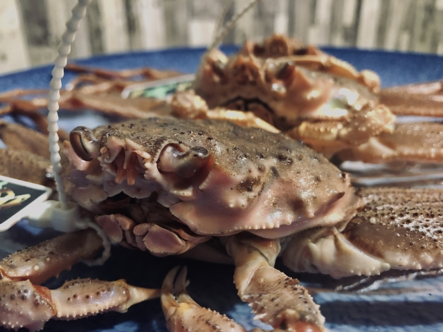

入館料
| 大人（中学生以上） | 小人（3歳以上～小学生） | |
| 一般 | 500円 | 300円 |
| 団体（20名様以上） | 400円 | 200円 |
※マーケット棟（うおいち）への入場は無料です。
※障がい者割引について
身体障害者手帳、精神障害者福祉手帳、療育手帳などお持ちの方と
付き添いの方（1名様）が施設をご利用される場合、受付時に手帳を
ご提示頂くことで、入場一般料金が半額でご利用になれます。
開館時間・定休日
火曜日以外 9:00～17:00
火曜日 休館
※夏休みか期間中は無休。11月～3月は第2第4火曜日は休館。
アクセス
道の駅「越前」への公共交通機関は、運行本数も少なく観光で訪れる方には大変ご迷惑をおかけしております。
自家用車かレンタカーでのご来訪をおススメいたします。
イベント案内
「海に潜む危険な生物展」開催
2022年7月16日（土）～8月31日（水）
 





公式マスコットキャラクター

かにミュージアムのクラブラボで研究している博士たち
かにの研究も食べるのも大好き。
かに好きなあまり地上にやってきた。
出身は日本海越前沖（越前町は日本屈指のズワイガニ水揚量）

くらげん
「どうして？」が口ぐせ
浮いているように移動
考え事をすると本当に浮く
かにまる
やさしくて物知り
怒るとカニのハサミのような耳がピーン
海を汚すと怒る。ものすごく。

しゃーくん
走るのが早い
３人の中では一番下っ端
ポケットにあるのはカニの殻
館内マップ
ミュージアムの入口（1F）よりエレベーターで3Fまで上がれます。
3Fから1Fまで降りるように順路を進むとまるで深海に潜って海を覗き見するような体験ができます
3Fでは越前の海や生活を紹介しています。
ビックラブホールではズワイガニの標本がズラリと並んでおりその違いを見ることができます！
①ビックラブホール
②越前の海
③海辺の生活
2Fでは越前の近海・沖に生息するいきものを展示・紹介しています。
豊かな越前の海とそこに住むいきものの魅力を感じられるフロアとなっております。
④浅海のいきもの①
⑤海のたからものホール
⑥かに漁今昔
⑦越前沖のいきもの①
⑧浅海のいきもの②
⑨越前沖のいきもの②
 

1Fでは体験を重視したエリアになっており、より身近に越前がにの魅力に触れられるようになっております。
お子様にも特に人気のエリアです
⑩深海300ｍのパノラマ劇場
越前がにのオスは水深300ｍ付近に、メスは少し浅い250ｍ付近に住んでいます。
2～3月、卵から幼生がふ化します。深海と越前がにたちの神秘をご覧ください
⑪ビックラブシアター
越前海岸に地中地形とそこにすむ越前がにの生態を１０ｍの大型スクリーンから大迫力な映像で紹介しています。
かに漁の難しさや醍醐味を味わうことができます。
⑫海遊歩道
越前沖は四季折々のいろいろな魚がすんでいます。
トンネル水槽でお楽しみください。
⑬クラブラボ
海遊歩道を抜けると、越前がにの生態研究室があります。
なかなか見ることのできない越前がにの研究風景をご覧ください。
⑭ふれあい海道
⑮クラブハウス
⑯かに漁チャレンジ
実際のかに漁船の操作を忠実に再現したシミュレーターです。
映像を360度投影し、迫力ある映像となっています。港を出てかに漁を終え、港に戻るまでを体験してみましょう。
⑰かにしばい
⑱絵画水族館
館内にいるかにや魚を自由にスケッチし、壁一面のバーチャル水槽に映し出してみましょう。
⑲かにあつめ
越前町は海岸美化運動を実施し、豊かな海づくりを推進しています。
砂浜に隠れたかにを集めましょう。時間制限内に集めたかにの数でポイントがでます。
お食事処うおいち
越前がにミュージアム2Ｆの食事処うおいちのご案内です。
夏は海鮮、冬はかに付き海鮮バイキングが楽しめ、お刺身、甘エビ
焼き魚、天麩羅、鍋、カニ足、コーヒーなどが、60分食べ放題です。
越前港で水揚げされた新鮮な魚介類を存分に味わえます。
越前がにを見る・学ぶだけでなくぜひ味わってみてください。
お食事処うおいち ※越前がにミュージアム2F
定休日：毎週火曜日
営業時間：平日 10:30~ 土日祝日 10:00~
※うおいちのあるマーケット棟は入館料無料となっております。